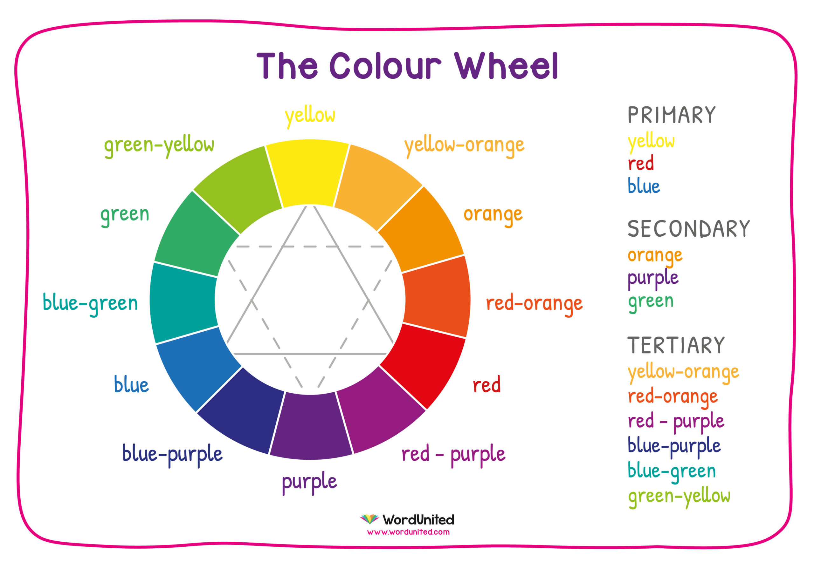

พื้นฐานการลงสี และการแรเงา
การลงสีและการสร้างเงาเป็นทักษะสำคัญที่ช่วยให้งานศิลปะหรือดีไซน์มีความลึกและความสมจริงมากขึ้น นี่คือบางขั้นตอนพื้นฐานที่คุณควรทราบ
การเลือกและผสมสี: เลือกสีที่ต้องการใช้ในงานของคุณโดยพิจารณาถึงสีพื้นฐาน สีเริ่มต้น (primary colors) เช่น สีแดง สีเหลือง และสีฟ้า และสามารถผสมสีใหม่โดยการผสมสีพื้นฐานนี้กัน
การใช้เทคนิคการลงสี: มีหลายเทคนิคสำหรับการลงสี เช่น การใช้ปากกาหรือแปรงลงสี การใช้สเปรย์ลงสี (airbrush) หรือการใช้โปรแกรมกราฟิกที่มีเครื่องมือการลงสีต่าง ๆ
การสร้างแสงและเงา: ในการลงสีและสร้างเงา ควรพิจารณาถึงแหล่งแสงและทิศทางของแสง และวางเงาของวัตถุต่าง ๆ ให้ถูกต้องตามทิศทางแสง
การใช้ลวดลายหรือการสร้างลายเส้น: การใช้ลวดลายหรือการสร้างลายเส้นที่เหมาะสมสามารถเพิ่มความน่าสนใจและความลึกในงานศิลปะของคุณได้
การใช้ทิศทางแสง: แสงส่องเข้ามาในหน้าอย่างไรและเมื่อมีแสงส่องเข้ามาเราจะได้รับแสงส่วนใดบ้าง ทิศทางแสงที่ต่างกันอาจสร้างเงาในรูปแบบที่แตกต่างกัน
การฝึกฝนและการศึกษา: การฝึกฝนและการศึกษาเพิ่มเติมเกี่ยวกับเทคนิคการลงสีและการสร้างเงาจะช่วยเสริมสร้างทักษะและความคล่องแคล่วในการใช้สีและแสงให้งานศิลปะของคุณมีความสมจริงและความน่าสนใจมากยิ่งขึ้น
